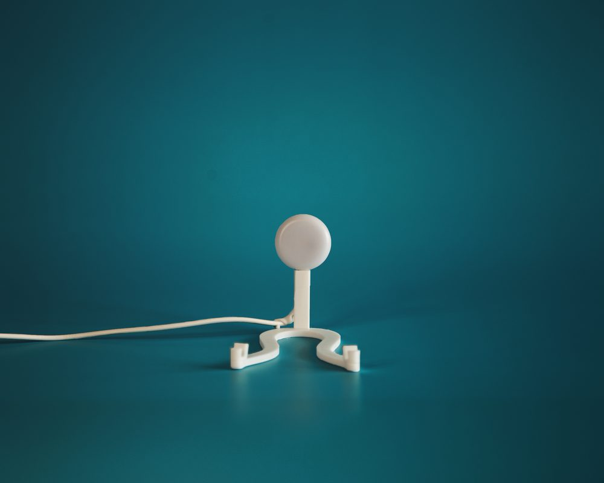
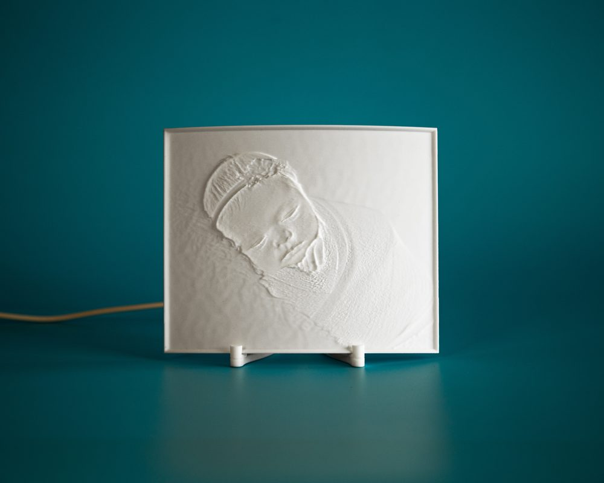
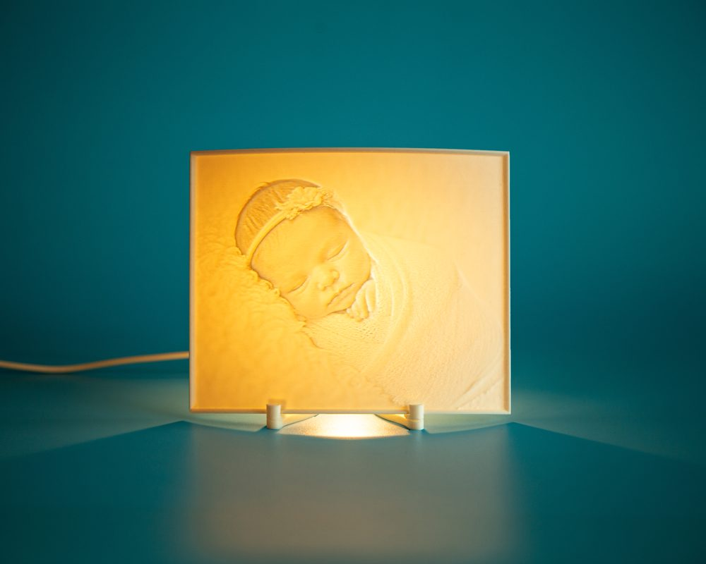

Fénykép
FényképA saját fotód, 3D nyomtatva
A legjobb fotóid nem a telefonodba valók, hanem a polcra.
Termékeink
Mit csinálj, ha megérkezett?
-

1Tedd le a LED talpat, és dugd be a vezetékét.
-

2Illeszd a 3D fotót a talp két tartójába.
-

3Kapcsold be.
Lámpa nélküli változat: keress neki egy helyet, ahol nappal átsüt rajta a fény, például az ablakban.